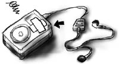
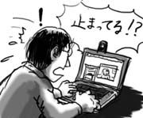
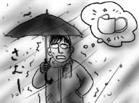

会社帰りに，今度は岩槻のゲーセンを冷やかしてみたのですが，「ケツイ」どころかシューティングゲームは全て撤去されて，何一つ残っていませんでした．冷酷な「選択と集中」に涙が止まりません．せめて「ストライカーズ1945(1945II, 1999)」か「ライデンファイターズJET(2)」くらいは残しておこうよ．
どんどんゲーセンで片身が狭くなって行きます．こんなことでは日常生活でだって…(勝手な演繹)．
実際のところ，自分はそれほどうまい訳ではないし，どう逆立ちしてもほとんどのゲームはワンコインクリアできないんですけど，好き！すき！！シューティングゲーム先生(先生？)なので，やっぱりゲーセンの隅っこの方でいいから，一角に残っておいて欲しい，そう思います．
ところで，今日の昼食時，食堂で同期達が「俺，織田信長だったよ」などと謎の会話を繰り広げていたので聞き耳を立てていたところ，どうやら「どうぶつ占い」ならぬ「歴史人物占い」なるものを，みんなで試してみたようなのです．しかし当然，僕は「ここで出来るよ」と勧められるでもなく「ミズグチは何だった？」と聞かれるでもなく…．
日常生活で片身が狭いのは今に始まったことではありませんでした．
そんな僕にできることは，「男女別でそれぞれ12人だったらもっとよかったのに．女だったら紫式部とか小野妹子とか…」という会話の横で「いや，それ男やし！」と小さく突っ込みを入れることくらいです．
「ケツイ」(CAVEの新作縦シュー)，おもしろ！
大宮のゲーセンでプレイしたのですが，第一印象は意外とよかったです．弾幕系縦シューティングは，基本的に弾が画面を覆い尽くすため，１面全部弾という平坦な展開になりがちなのですが，うまく背景なんかでメリハリをつけている感じです．中ボスを倒すと画面が派手に揺れるのも新鮮．あと敵ヘリを落とすとちゃんと失速してきりもみ墜落します．あほです(褒めてます)．
でもCAVEなので得点システムがよく分かりません．インストカードにも公式ページにも書かれていません．敵を倒すと出る得点アイテムの大きさがバラつくのですが，一体何がどうなっているのやら．アルカディアとか読んでないと土俵にすら上げてもらえない感じでちょっとイヤン．
とはいえ，弾筋を見切るのが楽しくてついついコインを投入．3面に入るといつものCAVEっぽい平坦な展開になってきました(「首領蜂」と同じ港ステージ)．背景が楽しいのって1,2面だけなんですか．
吉崎観音『ケロロ軍曹 6巻』(角川エースコミックス)，おもしろ！(こればっかり)
アニメや漫画のパロディネタ(特に藤子F)が毎回盛り込まれてるのですが，今回「ガ壱號涙唄」にはちょっと爆笑してしまいましたよ．生キテタノカチビ．
つい最近まで，ロードオブメジャー(略してドブメジャー)が，ガガガSPだと思っていました(挨拶)．
通勤の友としてiPodは手放せないのですが，本日ついに落っことしました．標準ケースを腰にひっかけて歩いていたところ，何のはずみか腰からポロリと落っこちたのです．もちろん，ケースから剥き出しの部分が下を向いてです．
樹脂側がアスファルトと衝突したらしく，角がぐんにゃりとキャラメルのように曲がってしまいました．まぁほんのちょっとなんでいいんですけど，再生中に落下したため，むしろHDDが心配です．

ワタシは魔都サイタマ，コンゴトモヨロシク…(挨拶)．
性格はDARK-CHAOSです．特殊能力として「外道 珍走団」を召還できます．
というわけで先日の選挙の結果，岩槻市はさいたま市と合併が決まった様子．はてさて，どうなることやら．
なんか今月はもう残業をしてはいけないらしいので，早めに会社を脱出したのですが，本屋に寄ってスティーブン・バクスターのジーリー・クロニクル全2巻(『プランク・ゼロ』『真空ダイアグラム』早川SF文庫)を買おうかどうか悩みまくったため，大して帰宅時間は変わりませんでした(悩み過ぎ)．
というのも僕はバクスターは『天の筏』しか読んでいないのです．『時間的無限大』『フラックス』『虚空のリング』という大本のジーリー・シリーズを読んでいない上に，これらは現在絶版状態．シリーズの穴埋め的短編集である(らしい)ジーリー・クロニクルを読んで果たしておもしろいものか．吟味の結果，大丈夫そうだったんで買ったんですけど，種明かしなどでいろいろ損してる気もします．
あと，社会思想社が潰れて入手不可能になっていたマーティン・ガードナー『奇妙な論理』が早川NF文庫で復刊されていました．ノンフィクションものは復刊が早いな！
最後に今日のIRC(要はチャット)のおもしろログを張り付け，取り留めのないまま今日の日記を終わろうと思います．
Hiraiwa> 新しい幼稚園のクラス分け
Hiraiwa> かち組 まけ組
mizuguTi> 幼稚園の名前「落合信彦学園」
fukazawa> お遊戯の題材は「狼たちへの伝言」
…いやだなぁ！
オンライン化した実家からの要望により，Webcamでビデオチャットをすることになりました．
小さなカメラウィンドウに両親や弟などが代わる代わる現れ，僕を指差したり顔を見合わせたりするので，いきなり晒しものにされている気分になりました(被害妄想)．しかし，両親とチャットする時に話し言葉でフランクに行くか，丁寧語でいくか，かなり真剣に悩みます．しかも実家には誰もタッチタイピングできる人がいないので，おのずと僕ばかりしゃべることになります．
さんざんビデオチャットの説明などを書いた後，「今あくびが見えた」とだけ返ってくるような熱い会話のキャッチボールが繰り広げられたため，「くしゃみです」と僕も速球を投げ返しておきました．
途中から，母ちゃん微動だにしないなと思っていたら，相手側のPCがフリーズしていました．しょっぱなからナイスな幕切れです．

というわけで，家族とのふれあいを楽しんだ後，岩槻市はどこへ嫁入りするべきかについて，市民投票に出かけました．見合いをセッティングする親戚のおばちゃん気分で臨みたいと思います．
今日は会社を早めに抜けて，歯を抜きに行きました．前回は最新歯医者のハイテク診察ぶりを見せつけてくれたわけですが，いざ治療となるとどうでしょうか．
液晶ディスプレイに再びレントゲン画像が表示され，前回までのあらすじが語られたあたりまではよかったのですが，麻酔を注射されるところから僕の知っている歯医者になってきました．相手が人体ではなかなかスマートに行かないものなのですね．歯茎にゴリゴリと針が突き刺ささります．痛い痛い！
お次はペンチが僕の口内に捩じ込まれ，親知らずを掴んだかと思うとすごい勢いで抜きにかかります．麻酔が効いているので痛くはないのですが，頭蓋骨ごと引っ張られる感じに心臓バクバクですよ．看護師「８番用のやつ持ってきますか？」歯科医師「いや，結構(歯が)ぐらついてるからこれで大丈夫」とかそんな会話が頭上で交わされます．せっかく専用のがあるんなら無理しないで！
多分１分かからずに抜けたのだと思います．歯科医師が僕に抜いた歯を見せてくれます．虫歯の状態がどうかというよりは，表面がデコボコで何か汚いなぁと思いました．ペンチで掴んだせいかもしれません．
帰宅後しばらくすると麻酔が切れて痛みを感じ始めたので，貰った痛み止めを飲んだのですが，それも時間と共に切れてきました．歯の生えはじめのような痛痒い感覚がなんとも不快です．あー，早く回復してー．
先週，風邪で喉をやられてから通勤時はマスクを着用しています．マスクは外気を直接吸引せずに済むのでありがたいのですが，眼鏡が曇るのと臭いのが欠点です．
ところで今日は雪が降り積もる中の出勤であるにもかかわらず，マスクをつけ忘れて家を出てしまいました．冷たい空気が容赦なく鼻と喉を襲います．なんでこんな日に限ってマスクをつけ忘れるのか．自分のタイミングの悪さを呪います．向かい風が冷たいです(いろんな意味で)．

最近，家では英PomPom社の「Space Tripper」のデモ版ばかりプレイしています．左右撃ち分け系の任意スクロールシューティングですが，一発死の緊張感とステージの長さの妙，そして何よりガシガシ動いて堅いボス(パーツ剥がしあり)がたまりません．この手のパソコン系シューティングでは結構珍しいと思います．デモ版は全3面らしいのですが，まだ3面ボスのフチコマ(間違い)が倒せません．がんばるぞ！(早く寝て喉を治すのが先決です)
実家にフレッツADSL(8M)が導入されました．
というわけで自動的に永久保証窓口にされた僕ですが，さっそく父親から
家の回線工事が終わりテストメールが会社に届いたが、メールアドレスを確認してみるとダイアルアップ用のアドレスで届いたが料金が従量制になっていないか不安です。
という，てにをはの間違った意味不明のメールが届いていました．
どうやら父親は「メールアドレス」と「アクセスポイントへのダイアルアップログイン名」を混同しているのだな，と気付くまでに５分ほど費やしました．
契約したプロバイダは，ダイアルアップ接続は(フレッツADSL接続とは別で)接続時間による従量課金であり，なおかつログイン名にメールアドレスを使用するため，両者を混同した父親は「ダイアルアップ接続でメールを出したのではないか！」と不安に陥ったようです．頼むから安心してください．
「問題ない」ということを懇切丁寧に書き下したメールを返信しておいたのですが，心配でネットを使えない父親から電話がかかってきたので，結局口で説明することになりました．
さらに「勝手にヤフーが開いたんやけど？！」と言い出すので「便利でええやん」と何の解決にもなっていない返事をしておきました．
永久保証窓口なので，最初からとばすと息切れしてしまいます．